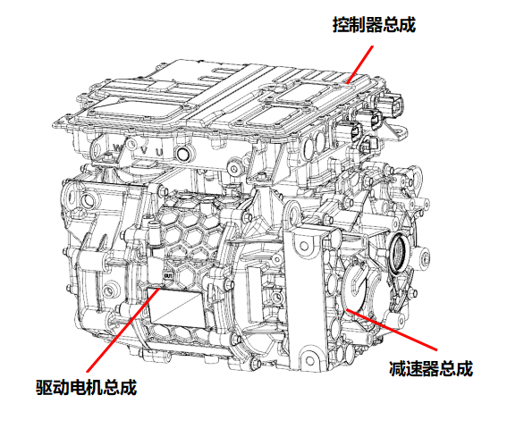
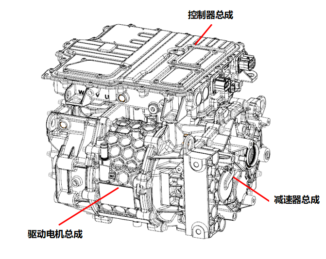

Система электропривода в сборе состоит из тягового электродвигателя в сборе, редуктора в сборе и контроллера электродвигателя в сборе (включая контроллер электродвигателя, PDU, DCDC, DCAC, OBC), как показано на Рисунке 1, применимо к моделям с запасом хода 506 km; как показано на Рисунке 2, применимо к моделям с запасом хода 405 km. Внешний вид двух систем электропривода в сборе отличается только разъемами; в данном руководстве в качестве примера рассматривается система электропривода в сборе модели с запасом хода 506 km, а отличия отмечаются особо.

Состав электропривода в сборе BEV-506km

Состав электропривода в сборе BEV-405km